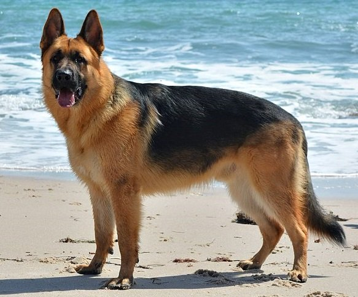
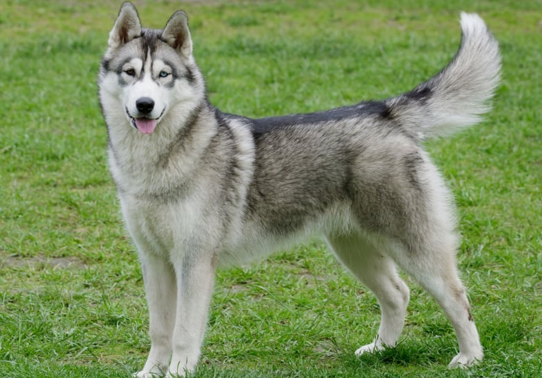

hi i'm iyed i am 20 years old and i am student in gomycode and this is my first HTML project.
| berger malinois | berger malinois | husky |
|---|---|---|
|  |  | |
| L’élevage méthodique a démarré en 1889. Cette race a été créée par le capitaine Max Fréderic Emile Von Stephanitz à partir du croisement des chiens de berger du centre et du sud de l’Allemagne. Le but était de créer un chien d’utilité, très intelligent et fort physiquement pour la garde des troupeaux. Ce n’est qu’à partir de la fin du 19e siècle et de la révolution industrielle en Allemagne que les premiers Bergers Allemands sont élevés. Puis, le capitaine Von Stephanitz définit la race. Un Berger Allemand est essentiellement un chien de travail. Chien dit polyvalent, le Berger Allemand est utile à de nombreux domaines. Pendant la Première Guerre mondiale, il accompagne l’armée allemande et notamment destinée à secourir les soldats blessés. Au fur et à mesure de la disparition des troupeaux, l'évolution de la race a poussé l’homme à utiliser les facultés du Berger Allemand pour en faire un chien policier, de guerre, chien d’aveugle ou sanitaire. | Le Berger Belge Malinois est l'une des 4 variétés de chien de berger belge, avec les Groenendaels, Tervuerens et Laekenois, dont il se distingue notamment par son poil court et sa robe fauve-charbonnée. Il descend donc des "chiens bergers du pays" du 19e siècle en Belgique dans la région de Malines. Le Club du chien de Berger Belge est fondé en septembre 1891 avec le lancement des premières sélections. La variété du Berger Belge Malinois est officiellement reconnue en tant que telle en 1909. Le standard actuellement en vigueur de la race a été établi en 2001. | Comme son nom l’indique le Husky Sibérien est originaire de Sibérie. Une région connue pour son froid. À la base, leur apparition est due aux Indiens Chukchies qui souhaitaient disposer de chiens capables de tirer leurs traîneaux. Leur légende associe la naissance du Husky de Sibérie au fruit de l’amour entre un loup et la lune. Ce qui explique pourquoi il a l’allure d’un loup doté d’une queue en forme de croissant de lune. Au début du 20e siècle, un marchand de fourrure d’origine russe importe les premiers Huskies Sibériens en Alaska pour prendre part à une course de 653 km. Cette race a été officiellement reconnue en 1966. |